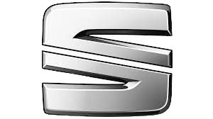
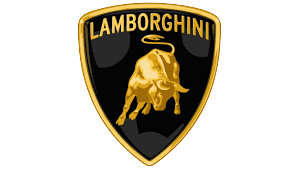
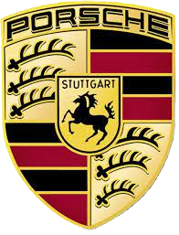
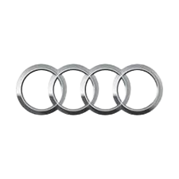

Volkswagen ,littéralement : « voiture du peuple » est un constructeur automobile allemand. La société est initialement créée à l'initiative du Front allemand du travail. La marque Volkswagen appartient au Groupe Volkswagen AG qui est en 2018, le premier constructeur mondial de véhicules devant Toyota avec 10,8 millions d'unités vendues.
| Creation | Dates cles: | fondateurs | slogan | siège social | nombres de voitures produites |
|---|---|---|---|---|---|
| 1937 | 1938:sortie coccinelle 1974:sortie de la Golf | Ferdinand Porsche | « On peut douter de tout mais pas de sa Volkswagen » | Wolfsbourg, Basse-Saxe | 150 000 000 |
Anciens Modèles
- Volkswagen Brasilia (au Brésil)
- Volkswagen Bora
- Volkswagen Caddy, utilitaire
- Volkswagen Caravelle
- Volkswagen 166
- Volkswagen 181
- Volkswagen CC
- Volkswagen Coccinelle
- Volkswagen New Beetle
- Volkswagen Beetle III
- Volkswagen Combi
- Volkswagen Corrado
- Volkswagen Eos
- Volkswagen Gol/Parati/Saveiro/Pointer (au Brésil)
- Volkswagen Golf I
- Volkswagen Golf II
- Volkswagen Golf III
- Volkswagen Golf IV
- Volkswagen Golf V
- Volkswagen Golf VI
- Volkswagen Golf VII
- Volkswagen Golf Plus
- Volkswagen Iltis
- Volkswagen Jetta
|  |  | |||
|  |  |
1960
1950
1945
1937
Hitler
Ivan Hirst
Ferdinand Porsche
autres
Peugeot
Bentley
Lamborghini
Coccinelle
Polo
Golf